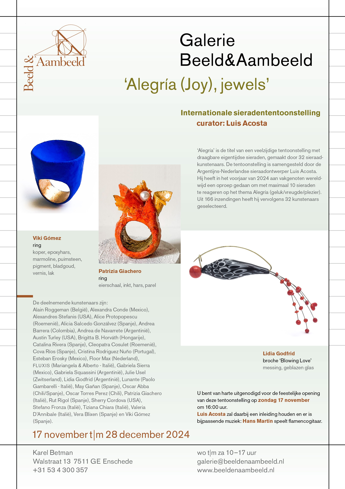
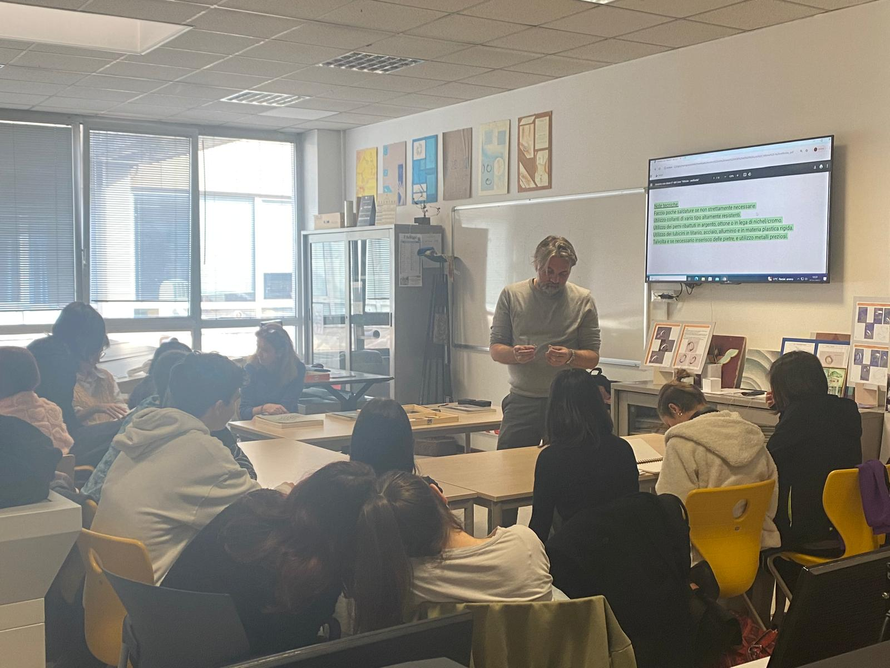
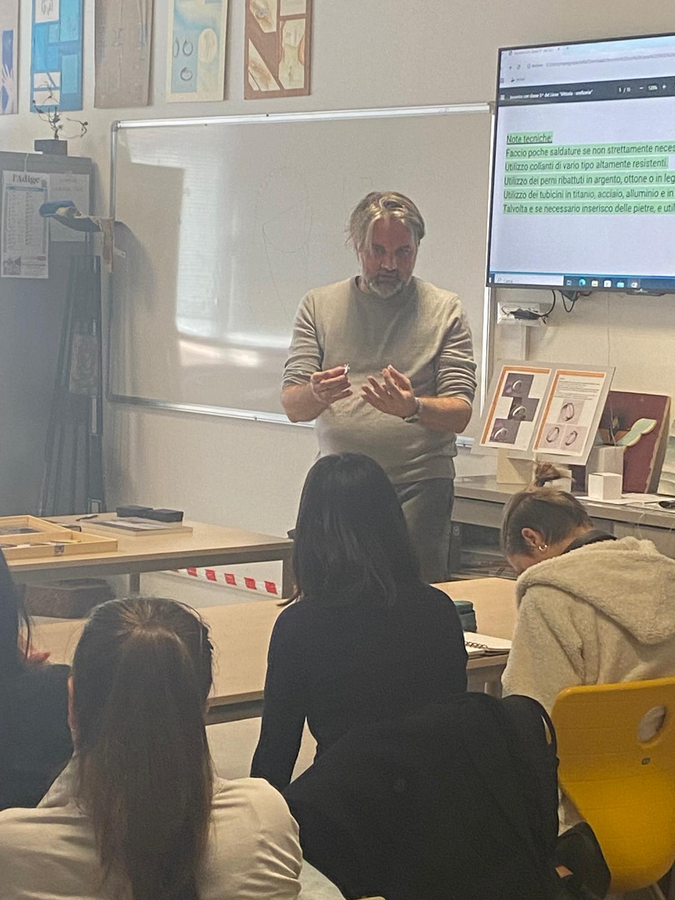

ALEGRIA (JOY), JEWELS
esposizione | Galerie Beeld & Aambeeld - Enschede (Olanda) | 17 nov. / 28 dic. 2024
Il 17 novembre 2024 negli spazi della Galerie Beeld & Aambeeld ad Enschede in Olanda si è inaugurata l’esposizione itinerante organizzata e
curata da Luis Acosta. Acosta ha selezionato 32 artisti del gioiello internazionali tra cui Stefano Fronza. Questa mostra in Olanda è la prima
delle nove in programma in tutta Europa.
Leggi l'articolo

CAMMEI MODERNI di Stefano Fronza
esposizione personale | Enoteca Grado 12 - Trento (Italia) | dal 15 al 30 novembre 2024
"Cammei Moderni" è il titolo dell’esposizione personale a cura del prof. Nicola Loizzo di Stefano Fronza a Trento, sua città natia.
In questa personale sono stati valorizzati dei gioielli realizzati da Fronza su base fotografica con i lunghi tempi di esposizione,
successivamente stampati su Dibond e alluminio, accostati ad altri materiali quali PVC, titanio, alluminio, oro bianco e rifiniti in laboratorio.
A completare l’esposizione tre grandi fotografie dell’artista che proveranno a chiarire alcuni aspetti della sua complessa poetica.
Leggi recensione
“Si può rileggere la storia dell'arte attraverso la pratica del camminare come fa Francesco Careri, docente di architettura all'Università di Roma, e si può in modalità ludica fotografare la luce o concentrare l'attenzione su significativi frammenti di realtà colti nelle relative complesse geometrie interne che ne riecheggiano il mistero. Appartengono a questa seconda modalità i “gioielli” di Stefano Fronza, artista trentino (1978) capace di inventariare in forme contratte eppur intense in piccole spille – fotografie ricordi ed emozioni, contro-immagini della città, queste isole di potenza evocatrice... un breve credo di estetica tra echi post-impressionistici e avanguardisti (Bauhaus - Moholy - Nagy).
In sintesi non ciò che vediamo, ma ciò che vediamo per la prima volta. Già T. Eliot scriveva che “il genere umano non può sopportare troppa realtà”. L'immagine matrice è una foto prodotta da un corpo in movimento (che talvolta assume i passi della danza), con tempi lunghi di esposizione, tesa a costruire una nuova sospesa realtà che sembra ogni cosa e ogni luogo, una vera e propria violazione della persistenza, una “s-definizione dell'arte” (H. Rosenberg).
È nel silenzio della strada che si avverte “come in nessun altro luogo il vento dell'eventualità” (André Breton); nel silenzio dello studio invece quella stessa attitudine all'ascolto diventa forma. La scelta dei fotogrammi più significativi e delle materie più atte ad accoglierli rivela non solo i tratti fondanti della poetica di Fronza, ma anche la traccia “genetica”, nella sua formazione, degli insegnamenti di un importante maestro, il prof. Peter Skubic alla Fachhochschule di Düsseldorf presso la sezione Design del gioiello, e delle sue carte fotografiche in primis, oltre a certe frequentazioni - sensibilità di scuola padovana legata a problemi percettivi e geometrie complesse.
Non a caso la scelta dei materiali interseca queste due linee stilistiche, i motivi della natura e quelli geometrico-architettonici. Siamo in strada ma catturati dalla luce, esterno – interno quasi corrispondono, non c'è cornice intesa come un telaio - finestra attraverso la quale guardare nello spazio raffigurato. In realtà sono immagini sospese di ogni cosa e ogni luogo, di alberi, lanterne veneziane o viennesi, soffusi ricordi di architetture di una Lucia Moholy e delle vetrate del Bauhaus di Dessau ri-viste nelle deformazioni da camera degli specchi o catturate nelle spire di teorie percettive cinetiche.
L'artista segue la sua passione nella stampa di altissima qualità e nella scelta dei materiali poi rifiniti in studio (alluminio, resine, titanio, acciaio... oro bianco in rari casi). In generale al gioiello ancora identificato con un oggetto realizzato con metalli e gemme preziose andrà aggiunto nella contemporaneità il pregio del materiale che va di pari passo con quello del progetto e la vera novità dei gioielli di Fronza sta nel fatto che l'oggetto può anche liberarsi della sua funzione (una spilla) e ritornare ad essere una fotografia, un quadro."
testo a cura del Prof. Nicola Loizzo - 2024
VITTORIA, SETTANT ARTE 70
esposizione e lezione | Palazzo Trentini - Trento (Italia) | dall’8 nov. al 7 dic. 2024
In occasione del 70° anniversario del Liceo Artistico "Alessandro Vittoria” nelle sale espositive di Palazzo Trentini, luogo simbolo
dell’autonomia trentina a Trento, le opere d’arte di alcune delle studentesse, degli studenti e dei docenti che in questi anni hanno
fatto parte della grande Comunità del “Vittoria” intraprendendo in seguito, o parallelamente, una carriera artistica.Tra questi
Stefano Fronza che per l’occasione è stato invitato ad esporre una sua opera e contestualmente a sostenere una lezione alle
classi di design del gioiello presso il Liceo Artistico “A.Vittoria” di Trento.


AGCPUNTO24
esposizione itinerante | Galleria La Mongolfiera - San Remo (Italia) / Personal Gallery, Tarragona (Spagna) / Archivio Negroni, Milano (Italia) | 1 giugno - 31 ottobre 2024
In occasione del 20° Anniversario di AGC - associazione gioiello contemporaneo sono state organizzate con la collaborazione della stessa associazione
e la curatela di Eliana Negroni, Emanuele Cannoletta e
Silvia Serra Albaladejo le mostre presso le varie gallerie in Italia e in Spagna. Anche Stefano Fronza tra i soci di Agc ha preso parte alle esposizioni.
Per saperne di più
MAD ABOUT JEWELRY
esposizione | MAD - Museo d’Arte e Design, New York (USA) | 4 - 8 maggio 2024
Stefano Fronza selezionato dal MAD - Museo d’Arte e Design di New York a partecipare presso lo stesso museo all’esposizione
MAD ABOUT JEWELRY 2024 curata da Bryna Pomp, esperta intenditrice del gioiello contemporaneo a livello internazionale e collezionista.
VISIONARIES - Milano Fashion & Jewels
esposizione | Fiera Milano (Rho - Milano) | 18 - 21 Febbraio 2024
VISIONARIES, esposizione dedicata alla visione del futuro e ai suoi interpreti, presenta oltre 80 lavori di designer internazionali
con le proposte jewel dei #visionaries che hanno saputo interpretare i seasonal essential e i trending colors delle due macro tendenze,
just for fun e make ordinary, extra-ordinary, presentate nel corso dell’ultima edizione della manifestazione. Tecniche rivoluzionarie,
nuovi stili e artigianato modernizzato hanno permesso uno sguardo approfondito sui must-have 2.0. Stefano Fronza è stato selezionato e
ha preso parte all’esposizione con la sua opera Venezia.